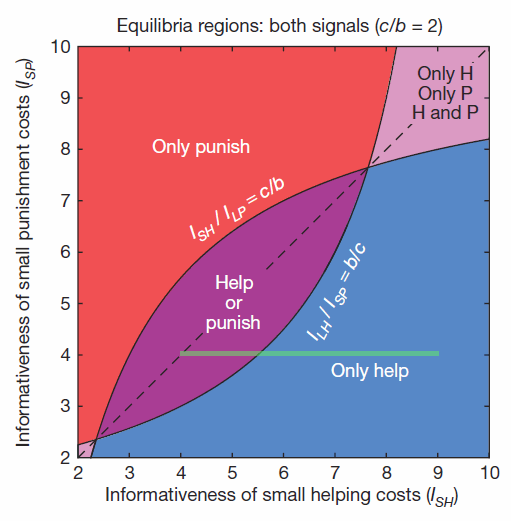
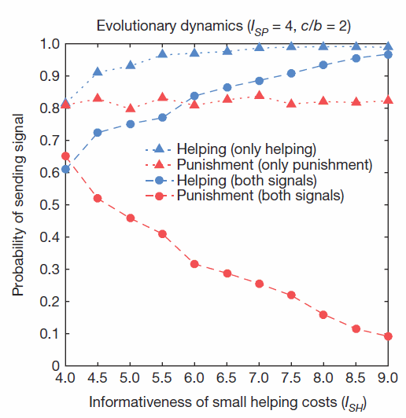
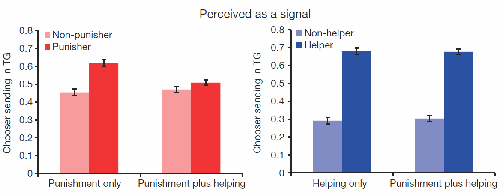
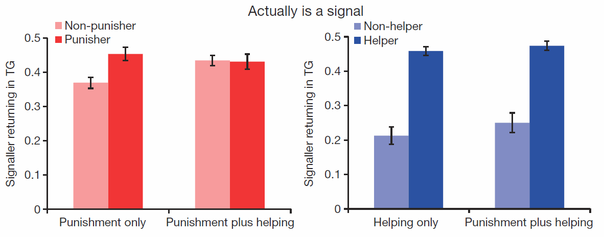
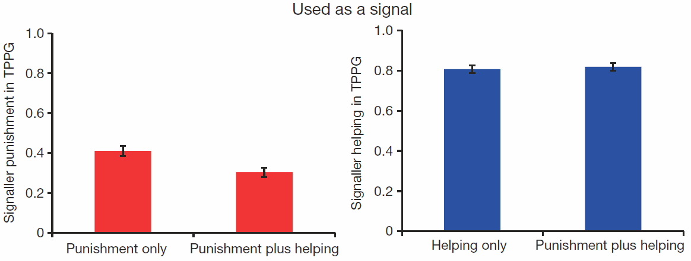

Agent-Based Models in Practice
EES 4760/5760
Agent-Based and Individual-Based Computational Modeling
J. Magnolia Gilligan
Class #23: Tuesday, November 17, 2026
Ways to use models
Ways to use models
- Detailed predictions
- Theory-building
- What-if analysis
Detailed Predictions
Detailed Predictions
- Develop model:
- Theory-driven
- Use existing theory
- Data-driven
- Need lots of observations/data
- Look for patterns in data
- Describe patterns mathematically
- Theory-driven
- Calibrate model
- Mathematical theory has parameters
- Adjust parameters to make model agree with past observations
- Sensitivity analysis to find how important it is to precisely know parameter values
- Mathematical theory has parameters
- Validate & Verify
Validation & Verification
-
Cross-validation (for comparing theories):
- Divide data into \(k\) parts:
\(1 \ldots k\)
- Each part has a turn as “test set”:
- Fit model parameters to the other parts
- Compare predictions to test set.
- Each part has a turn as “test set”:
- Choose model that performs best over the \(k\) comparisons.
- Divide data into \(k\) parts:
\(1 \ldots k\)
- Hold-out testing (for estimating predictive
accuracy):
- Divide data into hold-out and training data:
- Divide training data into \(k\) parts
- Use cross-validation to choose best model
- Calibrate best model on full training set
- Test predictions against hold-out set to estimate predictive power
- Divide data into hold-out and training data:
Theory-Building
Theory-Building
- Similar to detailed prediction
- Detailed prediction:
- When there is a well-established, reliable theory
- Use complicated model to capture the relevant details of the real world
- Refine the theory, calibrate parameters for accurate predictions.
- Theory-building:
- When theory is poorly established.
- Use simplified models to capture just the most important aspects of what makes the real-world system tick.
- Compare alternate theories to see which best describes the real world
- When you have established a basic theory with theory building, then you may be ready to proceed to detailed prediction.
- Detailed prediction:
What-if analysis
What-if analysis
- Does not necessarily need data
- Start with simple theory or hypothesis
- Explore implications
Robust Policy Analysis
- How to make policy under extreme uncertainty:
- R. Lempert: Making policy for the next 100 years (RAND
Corporation, 2003)
- planning for climate change, technological revolutions, etc.
- You can’t predict what will happen
- Division:
- policy variables (things you can control),
- external variables (things you can’t control).
- Use lots of model runs (BehaviorSpace
goes nuts)
- Which sets of policy variables avoid catastrophic outcomes across the widest range of external variables?
- R. Lempert: Making policy for the next 100 years (RAND
Corporation, 2003)
Realistic Expectations
Realistic Expectations
- Most ABM work does not aspire to make detailed predictions
- Much focuses on either theory-building or what-if analysis
Example of Detailed Predictions:
2014 Ebola
Epidemic
2014 Ebola Outbreak
- Ebola hemorrhagic fever is highly infectious through contact with
blood or other bodily fluids
- It also spreads from contact with infected fruit bats and non-human primates
- 40–50% of infected people die
- Outbreak began in spring 2014 in Guinea
- By summer:
-
Spread to Sierra Leone and Liberia with additional cases in Mali, Nigeria, and Senegal

100 new cases per week
In July, U.S. Government asked computational biologists to develop models of outbreak.
-

M.M. Waldrop, “Special agents offer modeling upgrade,” PNAS 114, 7176–7179 (2017). doi: 10.1073/pnas.1710350114{target=“_blank”}
Agent-Based Modeling of Ebola Outbreak
- Goals of model:
- Determine how bad the outbreak will become
- Provide guidance on number and location of field hospitals
- Develop plan to field-test experimental vaccine
- Challenges
- Simple equations can predict general properties of disease spread
- Spread of Ebola also depended on:
- Detailed geography and transportation networks
- Human behavior and social/familial relationships
- These required agent-based models
- Relief agencies needed answers in weeks
M.M. Waldrop, “Special agents offer modeling upgrade,” PNAS 114, 7176–7179 (2017). doi: 10.1073/pnas.1710350114
Schematic structure of model

K.A. Alexander et al., “Modeling Wildlife-Associated Zoönoses: Applications and Caveats,” Vector-Borne and Zoönotic Diseases 12, 1005–1018 (2012). doi: 10.1089/vbz.2012.0987
Parameterizing and Calibrating the Model
- The models needed detailed data that was hard to get
- At first the team had a high-school student doing a summer internship get up early every morning to look up data on the Facebook page of the Sierra Leone public health ministry
- An undergraduate student intern would enter the data into a computer.
- Later, they assigned a graduate student to work full time on gathering and entering the data.
- The models were tracking millions of people. They needed powerful supercomputers to run.
- This initial modeling let them forecast that if the epidemic was not controlled, there would be between 500,000 and 1,400,000 cases by January 2015.
- This was the decisive factor in President Obama’s decision to send U.S. military to help.
M.M. Waldrop, “Special agents offer modeling upgrade,” PNAS 114, 7176–7179 (2017). doi: 10.1073/pnas.1710350114
What-If Modeling for Policy Guidance
- The next steps were to use the model to guide policy decisions in
responding to the epidemic.
- By October, health workers were providing better data and the model was doing well at tracking the spread of the epidemic.
- One Friday in October, the government asked the modelers to tell
them where to put mobile hospitals.
- Cargo planes would be taking off Monday morning
- This required predicting not just the size of the epidemic, but the detailed locations of where sick people would be over the next several weeks and months.
- The team worked all weekend and produced the necessary predictions.
Model Predictions

M.M. Waldrop, “Special agents offer modeling upgrade,” PNAS 114, 7176–7179 (2017). doi: 10.1073/pnas.1710350114
The Role of Human Behavior
- Another important aspect of the spread of the disease is behavioral:
- Traditional mourning practices include washing and touching the body
of the deceased.
- This spreads infection
- Agent-based models predicted that changing these behaviors would dramatically reduce the spread of disease.
- Public health experts were skeptical that people would change their behaviors
- In the end, people did change behavior to adopt quarantine and safer burial practices.
- Traditional mourning practices include washing and touching the body
of the deceased.
- The epidemic ended in January 2016.
- The final toll was 28,000 cases and 11,000 deaths
- This was far less than would likely have occurred if the
epidemic had gone untreated.
- Model-driven interventions reduced death toll by 98–99%
M.M. Waldrop, “Special agents offer modeling upgrade,” PNAS 114, 7176–7179 (2017). doi: 10.1073/pnas.1710350114
Vaccine Testing
- At the time of the epidemic, there was a new experimental vaccine for Ebola, but it had not been tested on people.
- The agent-based models were used to design the field tests.
- Question: How fast would the disease spread?
- Would it be necessary to vaccinate everyone in the area?
- Or could health workers use a “ring” strategy?
- Vaccinate only the people who had first- or second-degree contact with a victim.
- The model said that a ring strategy would work.
- The vaccine was tested and proved up to 100% effective at preventing Ebola.
- Agent-based models played several important roles in guiding the international response.
M.M. Waldrop, “Special agents offer modeling upgrade,” PNAS 114, 7176–7179 (2017). doi: 10.1073/pnas.1710350114
Example Research Model
Example Research Model
J.J. Jordan et al., “Third-party punishment as a costly signal of trustworthiness,” Nature 530, 473 (2016). doi:10.1038/nature16981
- Cooperation and Cheating
- Common situation:
- Everyone is better off if everyone cooperates than if everyone cheats.
- Once everyone else has chosen their action, any individual is better off cheating than cooperating.
- Nash equilibrium: Everyone making the best choice for themself produces the worst outcome for everyone.
- Opposite of the “invisible hand” in economics.
- Common situation:
Prisoner’s Dilemma
| B Cooperates | B Defects | |
|---|---|---|
| A Cooperates | 5, 5 | 0, 7 |
| A Defects | 7, 0 | 1, 1 |
- No matter what player A does, player B is better off defecting
- No matter what player B does, player A is better off defecting
- If both players defect, both are worse off than if both cooperated.
Tragedy of the commons
- Ten farmers share a pasture.
- A pasture can support 100 cows.
- If \(N_{\text{cows}} \le 100\), each cow produces $1,000 worth of milk per month.
- If \(N_{\text{cows}} > 100\), each cow produces \[\$1,000 \times \left( 1 - \frac{(N_{\text{cows}} - 100)} {100} \right)\] worth of milk per month.
- Each farmer has 10 cows, each farmer earns $10,000 per month.
- Total: \(10 \times \$\text{10,000} = \$\text{100,000}\) per month
- One farmer adds 1 cow: total 101 cows.
- Each cow produces \(\$\text{1,000} \times (1 - 1/100) = \$\text{1,000} \times 0.99 = \$\text{990}\).
- First farmer earns \(11 \times \$990 = \$\text{10,890}\),
- Everyone else earns $9,900.
- Total: $99,990 per month
- Each farmer adds 1 cow: total 110 cows.
- Each cow produces \$900. Each farmer earns \$9,900.
- Total: $99,000 per month
- Each cow produces \$900. Each farmer earns \$9,900.
Iterated games
- If only playing once, best strategy is to cheat, because it is rational for everyone else to cheat.
- If playing multiple turns, threat of punishment in future rounds promotes cooperation.
- It is generally costly to punish people.
- If someone cheats against you, it’s often worthwhile to punish them.
- If you see someone cheating against another person and you aren’t affected, is it worth your while to punish the cheater, even if it costs you?
- Does tragedy of commons inhibit people from punishing?
Game Theory
- Punishment sends a signal:
- Deters cheaters.
- Signals that you are trustworthy.
Game
Game
- Player has two roles: Signaler and Chooser
- Signaler can be either Trustworthy or Exploitative.
- Two kinds of signals: Helping a third party or Punishing them.
- Two stages:
- Signalers can pay costs to send signals.
- Choosers decide whether to accept Signalers as partners for a second game.
- Cost of signaling can be either small (\(s\)) or large (\(\ell\))
J.J. Jordan et al., “Third-party punishment as a costly signal of trustworthiness,” Nature 530, 473 (2016). doi:10.1038/nature16981
Payoffs
- Second stage payoffs for Chooser, Signaler are:
| Trustworthy Signaler | Exploitative Signaler | |
|---|---|---|
| Chooser Accepts | \(m\), \(r\) | \(-e\), \(r\) |
| Chooser Rejects | 0, 0 | 0, 0 |
- \(m\) is benefit of mutual cooperation,
- \(r\) is reward for being trustworthy,
- \(e\) is harm from exploitation.
- Relationship: \(s < r < \ell\)
J.J. Jordan et al., “Third-party punishment as a costly signal of trustworthiness,” Nature 530, 473 (2016). doi:10.1038/nature16981
Rational strategies
J.J. Jordan et al., “Third-party punishment as a costly signal of trustworthiness,” Nature 530, 473 (2016). doi:10.1038/nature16981
- \(c =\) cost of accepting an exploitative Signaler
- \(b =\) benefit of accepting a trustworthy Signaler
- \(I_{SH}\), \(I_{LH}\), \(I_{SP}\), \(I_{LP}\) = informativeness of small & large help & punishments
- Details:
- \(c = (1 - t) e\)
- \(b = tm\)
- Where:
- \(t =\) probability Signaler is trustworthy
- \(m =\) benefit of mutual cooperation
- \(e =\) harm from exploitation
Agent-based model
Agent-based model
- Signaler randomly chosen to be Trustworthy or Exploitative.
- Chooser does not know Signaler type
- Evolution of strategies:
- Each agent plays a certain number of turns (a generation)
- Agents have probability of reproducing based on earnings from game.
- Offspring inherit strategy with some random “mutations”
J.J. Jordan et al., “Third-party punishment as a costly signal of trustworthiness,” Nature 530, 473 (2016). doi:10.1038/nature16981
Outcome of evolution


J.J. Jordan et al., “Third-party punishment as a costly signal of trustworthiness,” Nature 530, 473 (2016). doi:10.1038/nature16981
Human Game
Human Game
- Amazon Mechanical Turk (Internet)
- Human players assigned to one of three games:
- Signaler can only punish.
- Signaler can only help.
- Signaler can help and punish.
- Players play for real money and keep winnings
J.J. Jordan et al., “Third-party punishment as a costly signal of trustworthiness,” Nature 530, 473 (2016). doi:10.1038/nature16981
Trust Game
- To check whether signals are interpreted accurately by Chooser
players, run a second game:
- Chooser gets some money \(M\).
- Chooses how much to send to Signaler (\(x\)).
- Money sent to Signaler is tripled (Signaler get \(3x\))
- Signaler decides how much of the \(3x\) to return to Chooser.
- Players keep this money at the end of the game
- Chooser gets some money \(M\).
J.J. Jordan et al., “Third-party punishment as a costly signal of trustworthiness,” Nature 530, 473 (2016). doi:10.1038/nature16981
Perception of signaling:

- Chooser shows trust by sending more money to Signalers who punish and who help.
- Helping is a more powerful signal to Chooser than punishing.
- This matches theory of rational behavior.
J.J. Jordan et al., “Third-party punishment as a costly signal of trustworthiness,” Nature 530, 473 (2016). doi:10.1038/nature16981
Actual signaling

- Helping is indeed a more accurate signal of trustworthiness.
J.J. Jordan et al., “Third-party punishment as a costly signal of trustworthiness,” Nature 530, 473 (2016). doi:10.1038/nature16981
Signaler Choice

- Signaler is less likely to punish when helping is an option.
J.J. Jordan et al., “Third-party punishment as a costly signal of trustworthiness,” Nature 530, 473 (2016). doi:10.1038/nature16981
Conclusions
- Evolved strategies of agents match both pure theory (rational strategy) and experiments using real people.
- It is advantageous for third parties to carry out costly punishments when the punishments can signal trustworthiness to others in the community.
- When there are less costly or more effective ways to signal trustworthiness, third parties are less likely to punish.
J.J. Jordan et al., “Third-party punishment as a costly signal of trustworthiness,” Nature 530, 473 (2016). doi:10.1038/nature16981